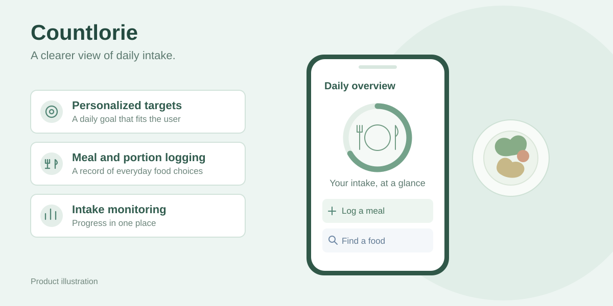

PENS Agile Product-Based Learning · Team project
Countlorie
Helping people connect their daily calorie target with what they eat.
- Mobile/web product
- Agile PdBL
- Team delivery
- 100+ downloads

- My role
- Team contributor to product delivery
- Product
- Mobile/web calorie tracker
- Process
- PENS Agile Product-Based Learning
- Release
- Published on Google Play
The product
Countlorie helps users set personalized daily calorie targets and record their food intake. Users can log meals and portions, search for foods, add custom entries and monitor intake against their daily target.
Building within a product team
Our team developed Countlorie through PENS Agile Product-Based Learning. We moved from product concept to release through sprint planning, iterative development, feature testing, sprint reviews and retrospectives.
The project gave me practical experience working within a shared product process, contributing to delivery and using feature checks and team reviews to guide the next iteration.
A product people can use
The team released Countlorie on Google Play, where it reached 100+ downloads. It connects my academic foundation in Agile development with experience delivering a product people can install and use.
The visual above is a product illustration. Visit the Google Play listing for the published application.